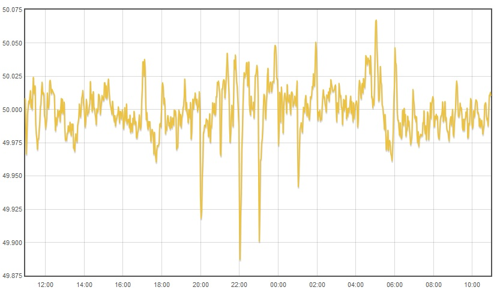

I was wondering why the eMon Library does not calculate the Frequency of the Electrical supply. I can imagine it should not be difficult with the present software, just detect the cross zero
Maybe it is just a question that it is not a critical or important parameter, but the more information, the better. Is there an specific reason?
Altohugh I can see there is a "non official" EmonLibPro version that computes the Frequency: http://openenergymonitor.org/emon/node/2406
Re: Frequency Calculation
MartinR's pll design can also report frequency
Paul
Re: Frequency Calculation
I'm curious. What good will knowing the frequency do you? Apart from giving you some idea about when the generators bring sets on-line to meet increasing demand, or conversely take them off-line as demand falls, or if you're into forensic acoustics, I can't see that it is anything other than a talking point.
Re: Frequency Calculation
I was just thinking in monitoring the quality of electrical supply. I know the frequency usually does not change very much, and usually does not produce any damage, but it could provide clues about some other problems, for example, low voltages that can not cope with the electrical load.
It is just a cost/benefit issue, the benefit is maybe low, but the cost to have something like this is also really low.
Re: Frequency Calculation
I agree with Robert. Here in the US, the only folks interested in the line frequency are the energy providers. As Robert mentioned, it's how they know when to put additional generating capacity online when needed, and take it offline when not needed.
Your statement low voltages that can not cope with the electrical load doesn't make sense. If you meant low voltages that electrical loads cannot cope with, that condition can be read directly with a voltmeter.
It is just a cost/benefit issue, the benefit is maybe low, but the cost to have something like this is also really low.
Perhaps not. Someone would have to integrate that routine into the current library. No trivial task, there. It would add more to the processing load the 328 microcontroller already has, and the return for all that? Information which is of very little use to the majority of OEM users.
Put another way, in 40+ years of doing Electronics for a living, I've very rarely needed to know the mains frequency.
Re: Frequency Calculation
The last time I needed to know it was when setting the speed of a rotary converter that generated a local 60 Hz supply, and that, if memory serves, was over 40 years ago when I was an apprentice and was testing some relays. The frequency meter was a vibrating reed, and that I do remember.
Re: Frequency Calculation
I've been known to use it in order to choose the correct calibration coefficients at run time. That's not so relevant if your calibration model is "let the end user calibrate it themselves", but if you want to ship it calibrated from the factory, to destinations unknown, then having a set of numbers for both 50Hz and 60Hz can help. The CTs I use have quite different phase errors at 50Hz Vs 60Hz (bigger at 50Hz from memory). Of course the accuracy you need for that application is pretty low, < or > 55Hz just about covers it.
I can imagine it might be useful for some off-grid applications too.
The frequency meter was a vibrating reed
No I2C interface then? There's a pull-down / restoration (well, promise of a restoration) of one of those here: https://www.youtube.com/watch?v=C1bsCVJKaJA. Skip to about 4 mins in if you want to see it finally powered up.
Re: Frequency Calculation
See EmonLib Pro http://openenergymonitor.org/emon/node/2406
My line freq over 24hrs.
